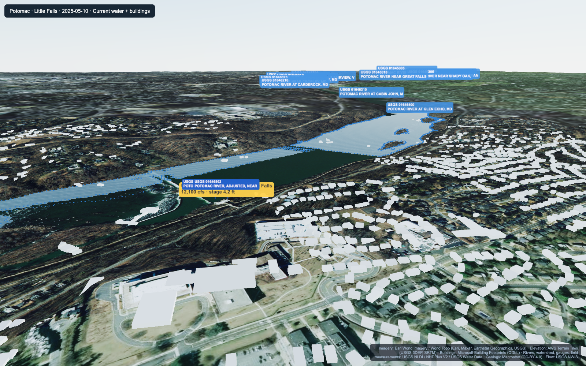
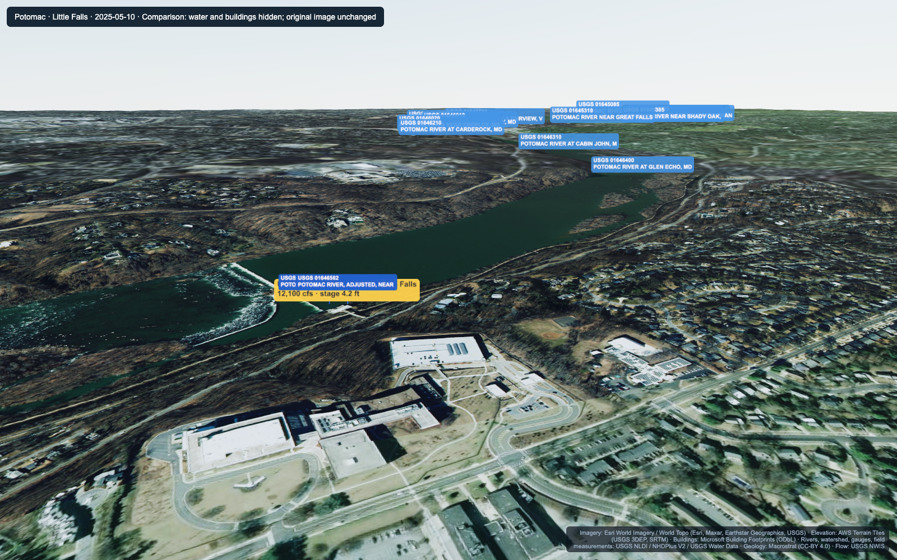
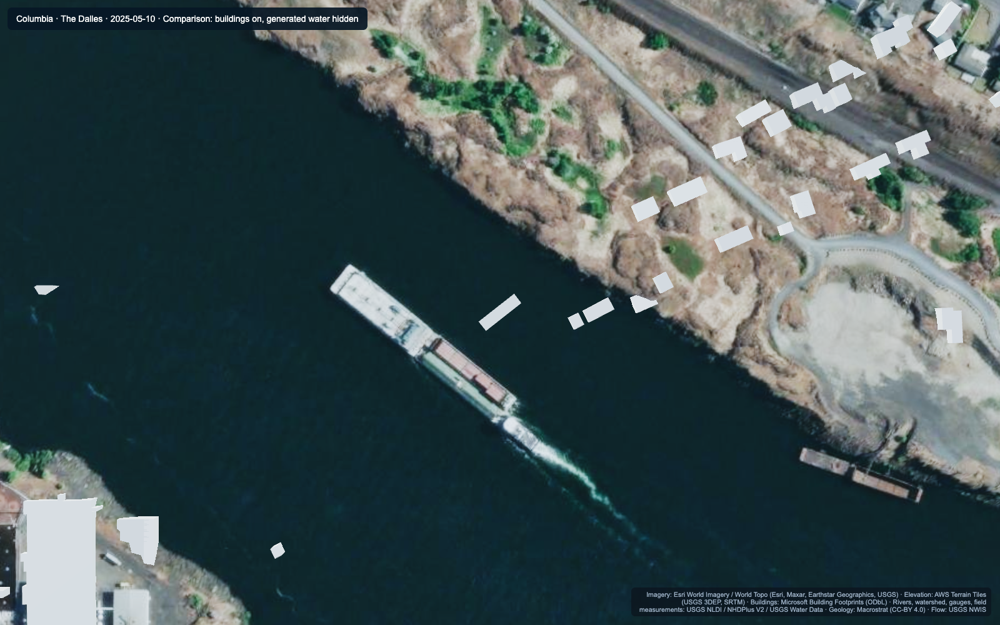
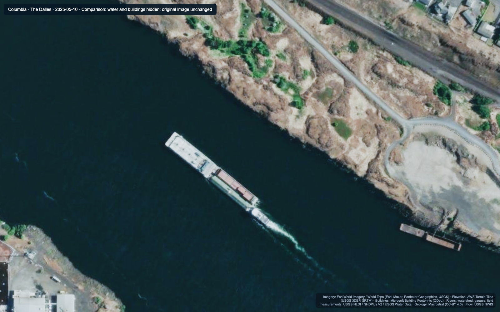
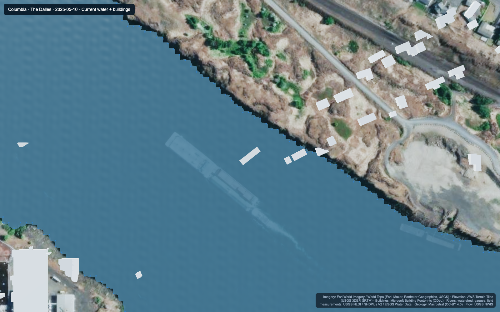
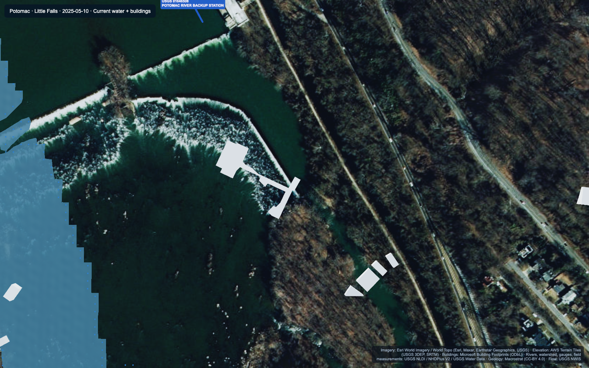

HydroTwin: what is making the river scenes look wrong?
Diagnosis captured on 9 November 2026 · Potomac / Little Falls and Columbia / The Dalles · selected river date: 10 May 2025.
The defects reproduce after loading. The main causes are questionable source footprints, simple building geometry, approximate river coverage and limited ground-level detail. No application code was changed during this investigation.
Full diagnosis and limitations · Browser evidence · Footprint / mapped-water checks
Potomac: the water layer does not cover the photographed river
The current blue surface leaves a substantial part of the visible river uncovered and introduces abrupt edges.

Current scene · click for full resolution
Same camera: water and buildings hidden · click for full resolutionColumbia: source footprints appear over photographed water
Water is hidden in both images below. White building shapes remain over open water independently of our generated river mesh. Their source classification/date needs checking.

Buildings on, water hidden · click for full resolution
Same camera: buildings and water hidden · click for full resolutionRiver edge detail: stepped geometry
Columbia shows the grid-shaped shoreline. Potomac shows both missing river coverage and coarse boundaries.

Columbia — current water mesh · click for full resolution
Potomac — current water mesh · click for full resolutionRiverbank views: limited ground-level realism
These are the app’s automatic Riverbank presets after loading. Large flat/stretched foregrounds and untextured buildings remain.
Original full application screenshots
These preserve the original app panels. Other comparison images hide panels to expose the landscape.
What the evidence supports
| Finding | Columbia | Potomac |
|---|
| Buildings actually loaded | 2,144 | 2,300 |
| Bundled buildings with height tags | 0 | 0 |
| Footprint centers in mapped water* | 40 | 35 |
| Terrain / water grid spacing | 8.91 m | 9.91 m |
| Loaded detailed imagery | 4096×4096 | 4096×4096 |
*These are review flags, not proof that every structure is invalid. Bridges, piers, intake works and different source dates require individual checks. A common horizontal translation has not been established.
The reference water mapping is USGS legacy NHD geometry exposed through 3DHP. The aerial imagery date is not established as the selected river date. Current water calculations have not been validated as historical flood extents.
All screenshots are actual browser captures. Comparison views only hide labeled layers and panels; they do not replace imagery or geometry. Original attribution is retained. Camera movement performance was excluded. The river scene source files were verified unchanged.
Next priorities: accurate base water footprint; building source validation and heights; more realistic 3D environment; consistent vertical references and imagery dates.